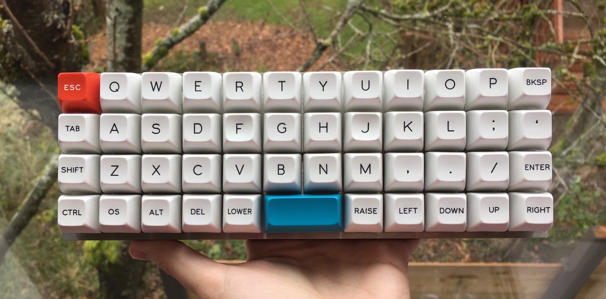
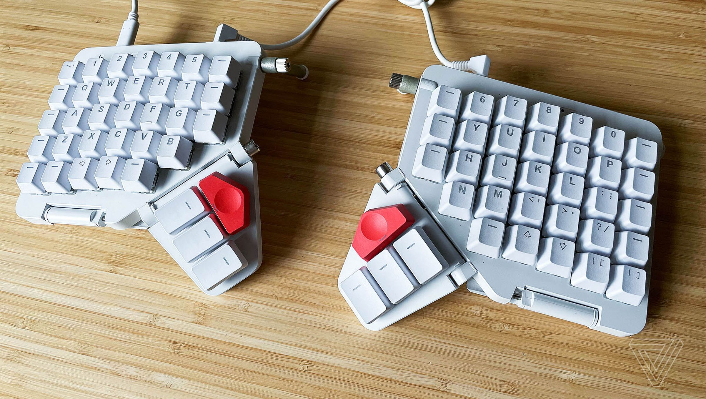
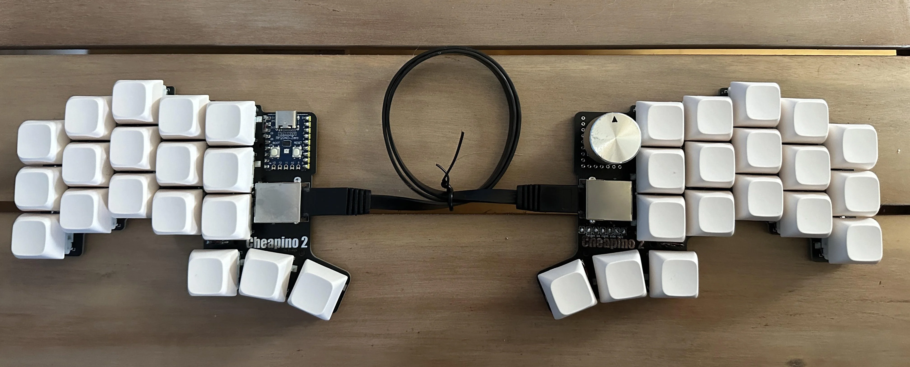
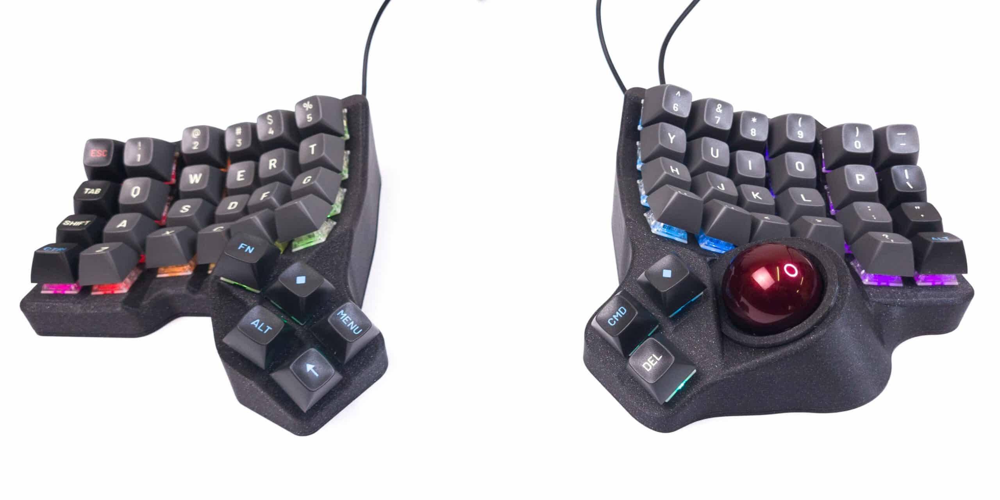
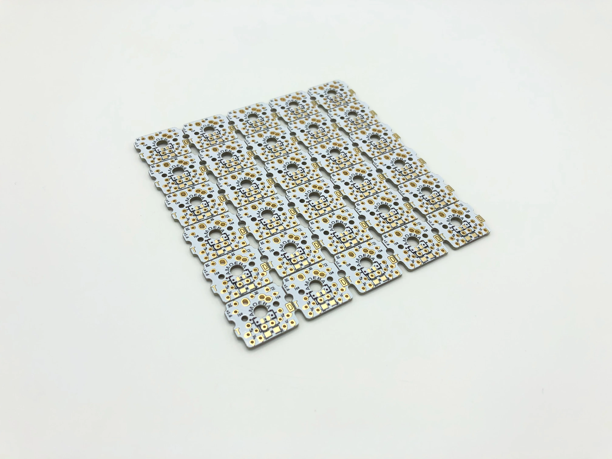
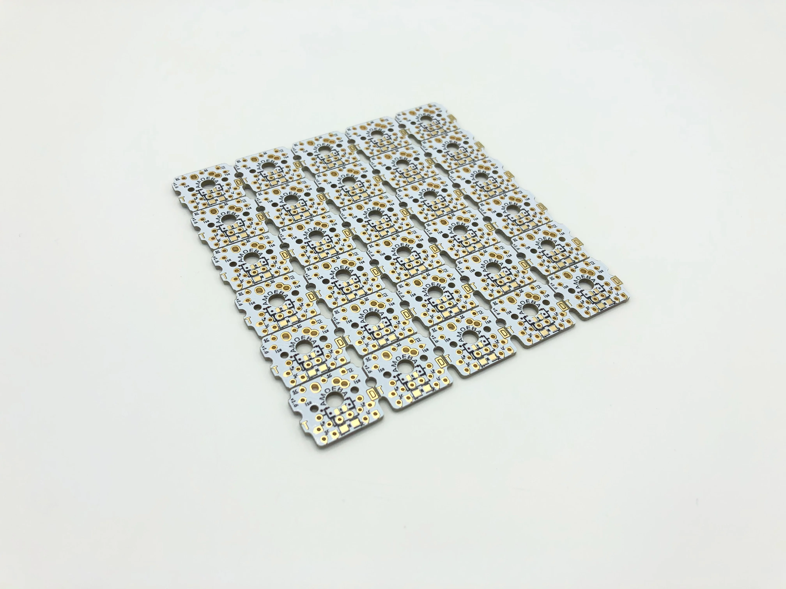

Joel
Created: 2024-10-25 Fri 12:49
1. Le puits sans fond des claviers ergonomiques: comment créer son propre clavier
2. Pourquoi?
- Douleurs reliées à la posture
- Douleurs reliées aux répétitions (RSI)
- Pour le plaisir
3. Un clavier ergonomique?
- Qui réduit la "ulnar deviation"
- Qui réduit l'angulation arrière des poignets
- Qui réduit la pronation des avant-bras "radial deviation"
- Qui permet d'ajuster la posture
- Qui permet de réduire les mouvements
4. Par où commencer?
5. Les bonnes questions à se poser
5.1. Split/Unibody

5.2. Profil du clavier
Low/High profile
5.3. Type de touches / switches
- MX/Choc/Gateron
- Hot swap?
5.4. Layout
5.4.1. Row staggered

5.4.2. Ortholinear

5.4.3. Column staggered

5.4.4. Aggressivité du layout

5.5. Avec ou sans fil
5.6. Firmware désiré
- QMK
- ZMK
- KMK
5.7. DIY?
- Soudure
- Hot swap
6. Le marché ressemble à quoi?
6.1. Commercial
6.1.1. Microsoft Natural Ergonomic Keyboard 4000

6.1.2. ZSA
- Voyager

- Moonlander

- Ergodox

6.1.3. MoErgo Glove80

6.1.4. Kinesis
- Advantage 360

- Advantage 2

6.1.5. Dygma
- Raise

- Defy

6.2. DIY
6.2.1. Corne

6.2.2. Lily58

6.2.3. Cheapino

6.2.4. Dactyl
- Manuform

- Cygnus

- Charybdis

- Custom!
6.2.5. https://www.reddit.com/r/ErgoMechKeyboards/
7. Faire son propre clavier
7.1. Comment ça marche?
7.1.1. Grid

7.1.2. Équipement
- Fer à souder
- Fil d'étain
- Jump wires (si hand wired)
- Pinces tweezers
- Imprimante 3D (optionnel)
7.1.3. Composantes


 


7.1.4. Où trouver les composantes?
- JCLPCB
- PCBWay
- AliExpress
- Amazons
- Mouser
- DigiKey
7.1.5. PCB vs filé à la main
8. Configuration
8.1. Flash firmware
8.1.1. QMK
- Open source
- Mature
- Wired
- Support souris/pointing devices
8.1.2. ZMK
- Open source
- Assez récent
- Wireless first
- Pas du support pour souris(-ish)
8.2. Features
- LEDs
- OLEDs
- Encodeurs
- Émulation souris
8.3. Keymap
Exemple: file:///Users/joel/qmk_firmware/keyboards/crkbd/keymaps/pacane/keymap.c
const uint16_t PROGMEM keymaps[][MATRIX_ROWS][MATRIX_COLS] = {
[_CLMK] = LAYOUT_split_3x6_3(
MEH_ESC, HOME_Q, HOME_W, HOME_F, HOME_P, HOME_B,
KC_LSFT, HOME_A, HOME_R, HOME_S, HOME_T, HOME_G,
LCTL_TAB, KC_Z, KC_X, KC_C, KC_D, KC_V,
T_FUN, T_LOW, KC_SPC,
),
[_LOW] = LAYOUT_split_3x6_3(
KC_TAB, XXXXXXX, XXXXXXX, KC_UP, XXXXXXX, KC_MPRV,
MO(_WIN), XXXXXXX, KC_LEFT, KC_DOWN, KC_RIGHT, KC_MPLY,
KC_LCTL, XXXXXXX, XXXXXXX, KC_RBRC, XXXXXXX, KC_MNXT,
_______, _______, _______,
),
};
9. Considérations
9.1. Adaptation
9.1.1. Espace mental
Split vs non-split
9.1.2. Layouts alternatifs


{kind=link}
9.1.3. Pratique
- Keybr
- Monkeytype
- Autres jeux
- Coder
9.2. Alternance au travail pour productivité
9.3. Coût
9.4. Temps
(setq mode-line-format nil)
(define-key org-mode-map (kbd "RET") 'open-image-presentation)